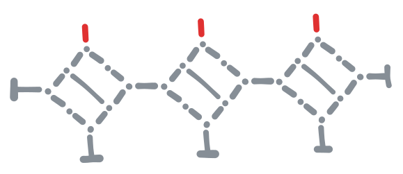

Problem: Prove that finding a hamiltonian cycle in a graph (a cycle that visits every vertex exactly once) is NP-hard.
This is a well-studied problem with numerous different proofs. The proof presented here consists of a systematic way to transform an arbitrary SAT problem into a graph that has a hamiltonian cycle if and only if the SAT problem is satisfiable (with the transformation only taking polynomial time). Therefore finding a hamiltonian cycle in a graph must be at least as hard as solving SAT, and SAT is NP-hard.
We begin with definitions:
Definition: A “ground” is a set of vertices that form a clique (all vertices are connected to each other) where every vertex has exactly 1 connection to a vertex outside the ground.
Example: A graph with a ground of 4 vertices which has been circled:
Notation: Instead of explicitly drawing the entire ground and all of its edges, we introduce T as notation for linking a non-ground vertex to the ground.
Example: The previous graph but drawn using the newly introduced notation:
Definition: A “component” is a set of vertices, connections between those vertices and/or ground, and a set of outwards connections.
Example: An example component where the red edges are outwards connections and the rest of the image is the component itself:
Definition: For a given hamiltonian cycle, an edge is “on” if the cycle passes through it, and is “off” otherwise.
Definition: An assignment on on/off edges on a component is considered valid if, when the outgoing edges are replaced with connections to ground, there exists a hamiltonian cycle that satisfies the assignment.
Example: Here are two different valid assignments for the component from the previous example, where red edges are on and gray edges are off:
Definition: A “gate” is a component where the outgoing edges have been divided into “inputs” and “outputs” such that the following are true:
- When the input edges are assigned to be on/off in any way, there is exactly one valid assignment for the output edges.
- In all valid assignments, there do not exist two outgoing edges that are connected to each other through a path of “on” edges. (This is to prevent a composition of multiple gates from creating an isolated cycle)
Theorem: The following component is a gate, and it is the NOT gate:
Proof: We will make use of the following fact:
Lemma: For any hamiltonian cycle, every vertex is connected to exactly 2 edges that are “on” (aka. part of the cycle).
Now, since this component has two vertices, let’s name the one on top A and the one on the bottom B. B has exactly 2 edges connected to it, so for an assignment to be valid both of those edges must be on (as per the above lemma). That immediately fixes the bottom edge of A to be on, so exactly 1 more edge connected to A must be on. This means that if we fix the input edge to be on the output edge must be off, and if we fix the input edge to be off the output edge must be on. Both of those cases are valid assignments (shown below), and thus our component is a gate. Since it also follows the truth table for a NOT gate, it’s a NOT gate.

We will need a few more gates to be able to express arbitrary SAT expressions, namely AND and OR. To make them we’ll need a few extra components.
Definition: We will call the following component an “intersection”:
Theorem: The following two assignments are the only valid assignments for the intersection component:
Proof: By checking all cases. The component does not have any connections to ground within itself, so that means it’s only possible for an even amount of outgoing edges to be on. It’s not possible for 0 outgoing edges to be on, as that would mean all 8 vertices inside the component are isolated and thus unreachable by the hamiltonian cycle. So the only interesting cases are those with 2 or 4 outgoing edges that are on.
There are two vertices in the component that have exactly 2 edges connected to them. The edges connected to those vertices must be on (as per the lemma from earlier). Therefore in the case all 4 outgoing edges are on, we get 2 isolated vertices inside the component (as shown below), so this case is also not valid.
So the only cases left are those with 2 outgoing edges that are on. The cases where those two edges are opposite one another are valid and are part of the theorem’s statement. The cases where those two edges are adjacent are invalid, because in all of them we get 5 isolated vertices as shown below. (Note that even though those 5 vertices can form a cycle of their own, this cycle is isolated from the rest of the graph and thus it still means it’s impossible to construct a hamiltonian cycle.)
Having now checked all cases, the theorem is proven.
Definition: We will call the following component an “all or nothing” component:

Theorem: The only two valid assignments for the all or nothing component are all outgoing edges being on, and all outgoing edges being off.
Proof: Again by checking all cases. There are only 2 cases to consider, so this is left as an exercise for the reader.
Notation: An empty circle with 3 edges coming out of it will be used as shorthand to denote the above component. (As shown below)
Theorem: The following component is a gate, and it is the OR gate:
Proof: By checking all cases. There are 4 valid cases, one for each pair of inputs.
This construction looks weird and arbitrary, but it’s not. The all-or-nothing component when looked at as a gate with 2 inputs and 1 output is almost an OR gate on its own; If both inputs are off the output is off, and if both inputs are on the output is on. The problem comes from the fact that’s not a gate. If you try to have one input be on and one input be off, you will not then be able to find a hamiltonian cycle for the configuration. Therefore this is a “pseudo-gate” - a gate that isn’t defined on all possible input combinations.
Right above the all-or-nothing OR pseudo-gate is another OR pseudo-gate. That one works well if 0 or 1 of its inputs are on, but does not work when both of its input are on. Therefore the goal of the rest of the graph is to combine both of these pseudo-gates into a single real OR gate. On the left of both pseudo-gates are “distributors” (OR pseudo-gates but connected backwards). A distributor has 1 input and 2 outputs. If the input is off both outputs are off, and if an input is on exactly one of the outputs is on, but it’s not clear which as both possibilities are valid assignments. This lets the inputs themselves “choose” which pseudo-gate to go to; If there’s only one input to our gate that is on, that input must go to the top pseudo-gate, and if both of them are on they must both go to the bottom pseudo-gate. This means that now all input combinations are valid and properly sent to the correct pseudo-gate. On the right of the pseudo-gates is yet another OR pseudo-gate that combines the results. It doesn’t need to be a full OR gate to do that as it’s impossible for both pseudo-gates to output an “on” signal at the same time.
Theorem: An acyclic composition of gates is a gate.
Proof: By induction on the number of gates in the composition.
Theorem: The following component is a gate, and it is the AND gate:
Proof: This is an acyclic combination of gates, therefore a gate. By De Morgan’s law, this follows the truth table of an AND gate, therefore it is an AND gate.
Theorem: The following two components are both gates, and they’re the COPY and DELETE gates, respectively:

Proof: By checking all cases.
With the set of gates {AND, OR, NOT, COPY, DELETE} it is easy to transform any SAT expression into an acyclic composition of gates. Let’s assume we’ve done that for some SAT expression we’ve been given, and that it looks like this:
Then I claim that…
Theorem: For any SAT expression, the following graph has a hamiltonian cycle if and only if the SAT expression is satisfiable:
Proof: We’ll prove each direction individually:
-
Hamiltonian cycle ⇒ SAT: Assume that the above graph has a hamiltonian cycle. This hamiltonian cycle either passes through or doesn’t pass through each of the input edges of the SAT expression. That means each of those edges is fixed to be either on or off. Since the SAT expression is a gate, this forces the output edge to be on if the input satisfies the SAT expression, or off if it doesn’t. Due to the vertex on the output edge having exactly 2 edges connected to it, in any hamiltonian cycle both of those must be on, more specifically the output edge of the SAT expression. Therefore for a hamiltonian cycle to exist the input edges must be in a state that satisfies the SAT expression, and that the SAT expression is satisfiable.
-
SAT ⇒ Hamiltonian cycle: Assume that the SAT expression is satisfiable and that we are given a set of inputs that satisfies it. We first set the input edges of the graph to on/off based on the given set of inputs. Then, since our SAT expr is just a composition of 5 specific gates, we can iterate through them one by one. For every gate where we’ve set all of its inputs to on/off, we can easily set all of its other edges (both output edges and internal edges) to on/off due to having already explored all possibilities manually. Repeat until we’ve set every internal edge of the SAT expression and its output edge. Since our inputs satisfy the SAT expression the output edge must be on, which is exactly what it needs to be. After all of this the only thing that remains is the edges inside the clique, which are easy to set such that we get a hamiltonian cycle.
And that concludes the proof! There is only one minor thing to consider, and that is whether or not the above graph is constructable in polynomial time. A fully rigorous proof of that would involve turning everything that has been said here into pseudo-code and proving its time complexity, but it should be fairly obvious that the time complexity of the procedure is proportional to the size of the final graph, and that size is…
| Vertices | Edges | |
|---|---|---|
| Ground clique | O(N) | O(N^2) |
| Rest of graph | O(N) | O(N) |
…O(N^2), which is a polynomial, so the algorithm must also finish in polynomial time.